# Spiral Galaxies and Morphological Classification - [Hubble archive (ESA)](https://esahubble.org/images/archive/category/galaxies/?search=spiral+galaxy) - [JWST archive (ESA)](https://esawebb.org/images/?search=spiral+galaxy) --- <ul class="contents-list"> <li><a href="#/part-1"><strong>Part 1:</strong> Historical context</a></li> <li><a href="#/part-2"><strong>Part 2:</strong> What do we see in Spiral Galaxies?</a></li> <li><a href="#/part-3"><strong>Part 3:</strong> Galaxy classification - qualitative</a></li> <li><a href="#/part-4"><strong>Part 4:</strong> Galaxy classification - quantitative</a></li> <li><a href="#/part-5"><strong>Part 5:</strong> Spiral Galaxy Rotation</a></li> <li><a href="#/part-6"><strong>Part 6:</strong> Stars, stellar populations & star formation</a></li> <li><a href="#/part-7"><strong>Part 7:</strong> Rare & Diffuse galaxies</a></li> <li><a href="#/part-8"><strong>Part 8:</strong> Galaxies in surveys</a></li> <li><a href="#/part-9"><strong>Part 9:</strong> Large-Scale Morphology</a></li> <li><a href="#/part-10"><strong>Part 10:</strong> Additional resources</a></li> </ul> <!-- ## Topics covered 1) What galaxies look like? 2) Historical context 3) What do we see in Spiral Galaxies? ?) T-type classifications 4) Galaxy classification - qualitative 5) Galaxy classification - quantitative 6) Stars, stellar populations & star formation 7) Galaxies in surveys 8) Large-Scale Morphology 9) Key Scientific Discoveries from Modern Surveys --> --- <!--# Historical context--> <h2 id="part-1" class="slide-part-title">Part 1: Historical context</h2> <p>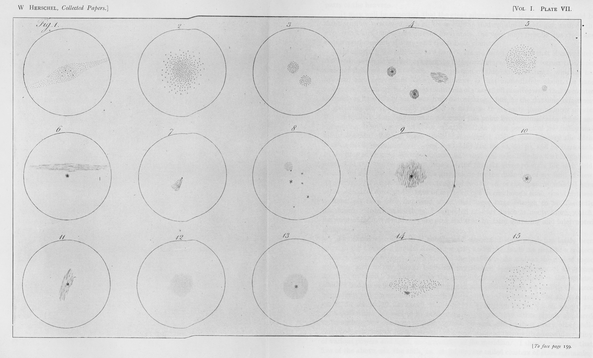</p> - 1700s: First descriptions of diffuse & fuzzy nebulae observed with telescopes - 1750s: First suggestions that the milky way was a flat disc and nebulae could be extragalactic (Wright & Kant) -v- <p>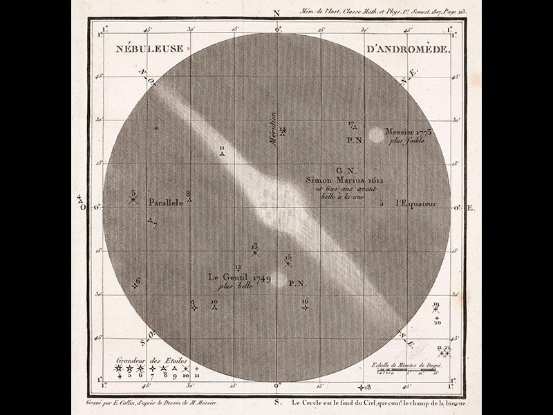</p> - 1770: Messier catalogued ~100 brightest nebulae -v- - 1920: The "Great debate" between Sharpley & Curtis about whether nebulae were interstellar or extragalactic -v- <p>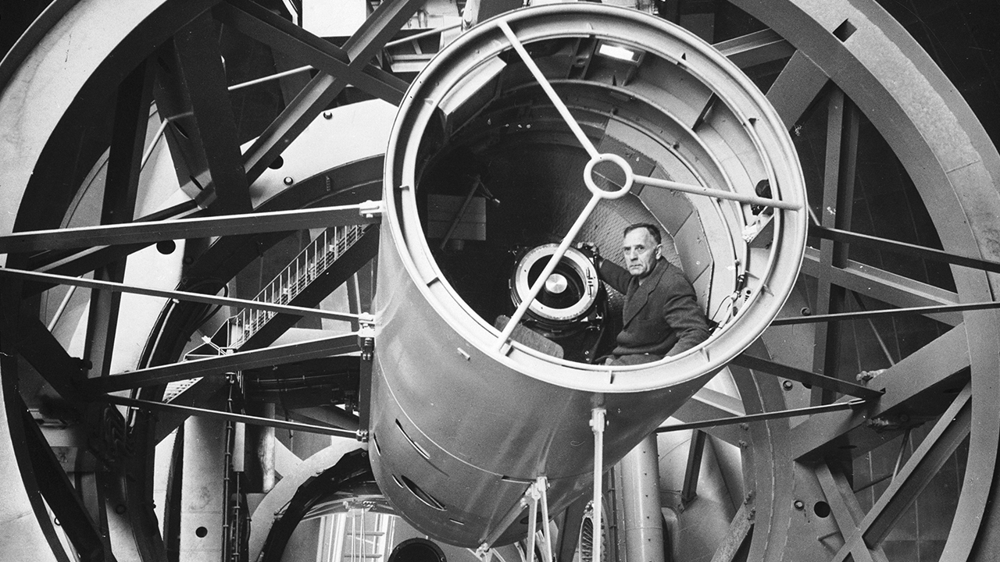</p> - 1925: Hubble determined distances to nebulae by measuring individual variable stars in nearby galaxies - 1928: Hubble (and Lema\^{i}tre) found that most galaxies were receding, with speed proportional to distance $d = H_0/\nu$ --- <!--# What do we see in Spiral Galaxies?--> <h2 id="part-2" class="slide-part-title">Part 2: What do we see in Spiral Galaxies?</h2> ### Inclination <p>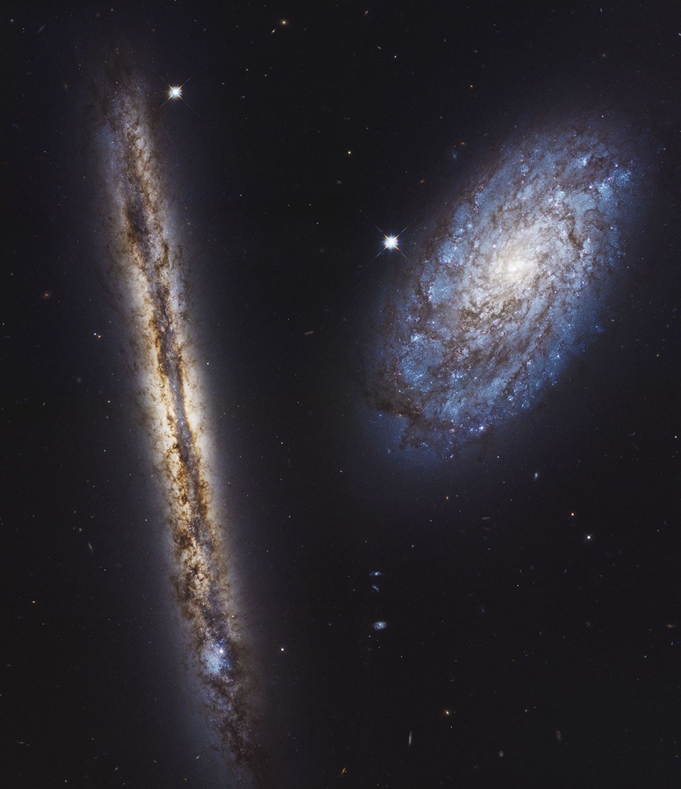</p> - <span class="fragment">Spiral galaxies show face-on or edge-on geometries - they are **flat discs** - i.e. like the Milky Way</span> -v- ### Milky Way Structure - <span class="fragment">**Thin Disk**: Scale height $h_z \approx 300\text{ pc}$, young Population I stars, high gas fraction, active star formation.</span> - <span class="fragment">**Thick Disk**: Scale height $h_z \approx 1\text{ kpc}$, older metal-poor stars, higher velocity dispersion.</span> - <span class="fragment">**Central Bulge**: Spheroidal concentration of stars in the core ($R \lesssim 1\text{--}2\text{ kpc}$).</span> - <span class="fragment">**Stellar (& Dark Matter) Halo**: Metal-poor stars, globular clusters, extended dark matter mass distribution.</span> -v- ### Arms <img src="https://upload.wikimedia.org/wikipedia/commons/c/c5/M101_hires_STScI-PRC2006-10a.jpg" class="r-stretch" /> - Spiral number: - <span class="fragment">Regular spirals typically have 2 distinct arms - **grand design spirals**</span> - <span class="fragment">Sometimes spiral patterns do not cover the full disc or are incoherent ("intermediate" spirals)</span> - <span class="fragment">We can measure the average angle of the arms with respect to perpendicular from the centre</span> - <span class="fragment">Very low pitch angles are called **wound-up spirals**</span> -v- ### Arms <p>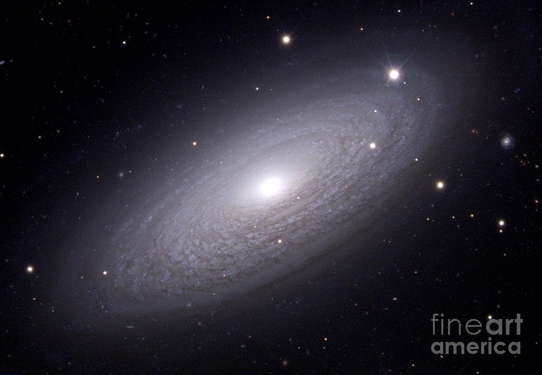</p> - <span class="fragment">Very occasionally, there are a "sea" of spiral-like structures without global symmetry - **flocculant spirals**</span> - <span class="fragment">Driven by stochastic self-propagating star formation</span> -v- ### Arms - <span class="fragment">We see that stars do not rotate with constant angular velocity - more distant stars have slower angular velocities:</span> - <span class="fragment">$$\Omega(r) = \frac{v_c(r)}{r}; \Omega(r) \propto 1/r$$</span> - <span class="fragment">What does this imply for spiral arms?</span> - <span class="fragment">Spirals moving with the stars would quickly become more and more wound (the so-called **winding problem**)</span> - <span class="fragment">So spiral arms are not comoving with the stars.</span> -v- ### Bulges <img src="https://upload.wikimedia.org/wikipedia/commons/9/98/M31_center_HST.jpg" class="r-stretch" /> - Almost all spiral galaxies show a bulge -v- ### Classical Bulges - <span class="fragment">Spherical, pressure-supported (ratio of rotational velocity $V$ and velocity dispersion $\sigma_V$, $V/\sigma_V < 1$).</span> - <span class="fragment">Usually show modest or absent (i.e. random) rotation</span> - <span class="fragment">Formed rapidly via early major mergers or monolithic collapse.</span> - <span class="fragment">Steep surface brightness profiles ($n \approx 4$).</span> - <span class="fragment">Typically yellow/white in colour</span> -v- ### Pseudobulges (Disk-like): - <span class="fragment">Flattened, rotationally supported ($V/\sigma > 1$)</span> - <span class="fragment">Formed slowly via secular internal disk instabilities and bar driving.</span> - <span class="fragment">Exponential-like surface brightness profiles ($n \approx 1\text{--}2$).</span> - <span class="fragment">Some bulges show strong rotation are called "pseudobulges"</span> - <span class="fragment">Appear like small elliptical galaxies (see later)</span> -v- ### Bars - Linear stellar structures spanning galaxy centers, found in $\sim 65\%$ of disk galaxies - Bar axis is aligned along the plane of the galactic disc - Most obvious in NIR (than e.g. UV) -v- ### Rings <p>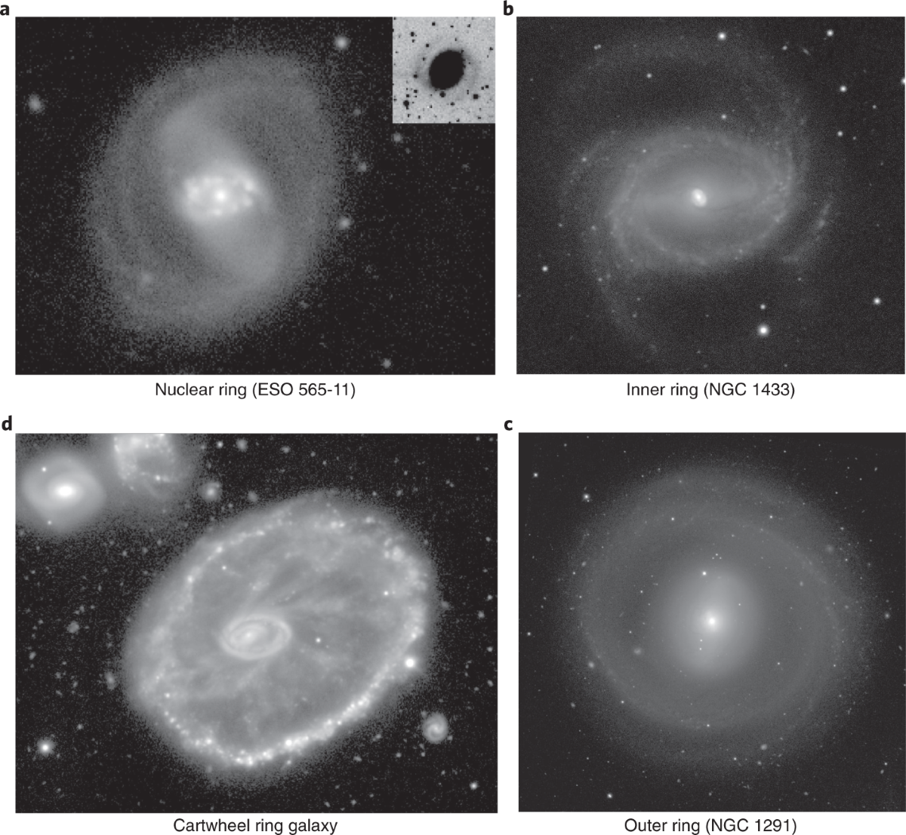</p> -v- ### Rings - <span class="fragment">Nuclear Rings ($nr$): Located near the Inner Lindblad Resonance (ILR, $r \lesssim 1\text{ kpc}$), hosting intense circumnuclear starbursts.</span> - <span class="fragment">Inner Rings ($r$): Encircle the bar ends at the Corotation Radius (CR), defining the edge of the inner disk.</span> - <span class="fragment">Outer Rings ($R$ / $R_1 R_2'$): Faint, large-scale structures situated near the Outer Lindblad Resonance (OLR, $r \sim 2.5 R_{\text{bar}}$</span> - <span class="fragment">Collisional Ring Galaxies: Formed via collisions (e.g., Cartwheel Galaxy)</span> --- # Galaxies are complex 3D objects - how do we classify them? # Qualitative vs quantitative? <h2 id="part-3" class="slide-part-title">Part 3: Galaxy classification - qualitative</h2> -v- # Galaxy classification - qualitative - First introduced in 1926 (with many attempts since to update it) - Four classes: - - Ellipticals (E0 -> E7) - - Lenticulars (S0 & SB0) - - Spirals (Sa/b/c or SBa/b/c) - - Irregulars (Irr) -v- - These categories are determined by: - <span class="fragment">**Symmetricality**:</span> - <span class="fragment">Assymetric = irregular</span> - <span class="fragment">**Concentration of light** as a function of distance:</span> - <span class="fragment">Sharp decay (& featureless) = Elliptical</span> - <span class="fragment">Extended "flat" disc = Lenticular or Spiral</span> - <span class="fragment">**Observed shape** (for ellipticals only):</span> - <span class="fragment">Oblateness from circular ($a=b$; E0) to ($a=0.3*b$; E7)</span> - <span class="fragment">**Presence of spiral arms** (S) and/or bar (SB)</span> - <span class="fragment">Absence of spirals (Lenticular, 0)</span> - <span class="fragment">Tight spirals & large central core (a) -> open spirals & small central core (c)</span> -v- ## The "Tuning fork" <p>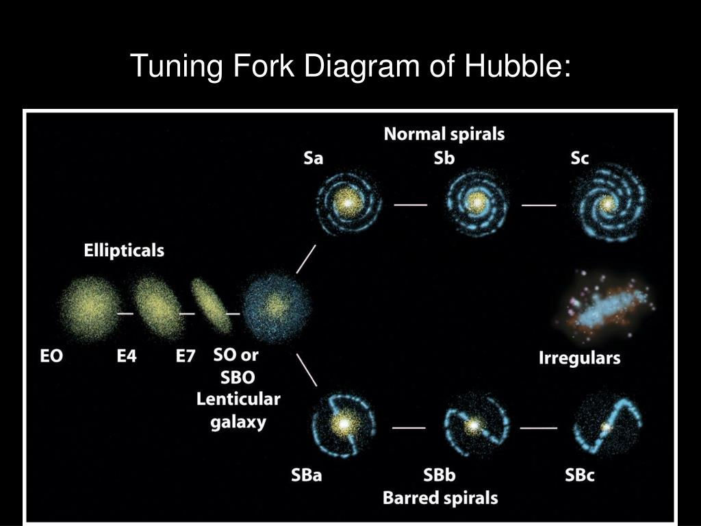</p> - <span class="fragment">Also called "Early" (ETGs) to "Late" galaxies (LTGs) (mirroring stars)</span> - <span class="fragment">This does not really imply evolution _along_ the diagram!</span> -v- ## de Vacouleurs revision (1959) <p>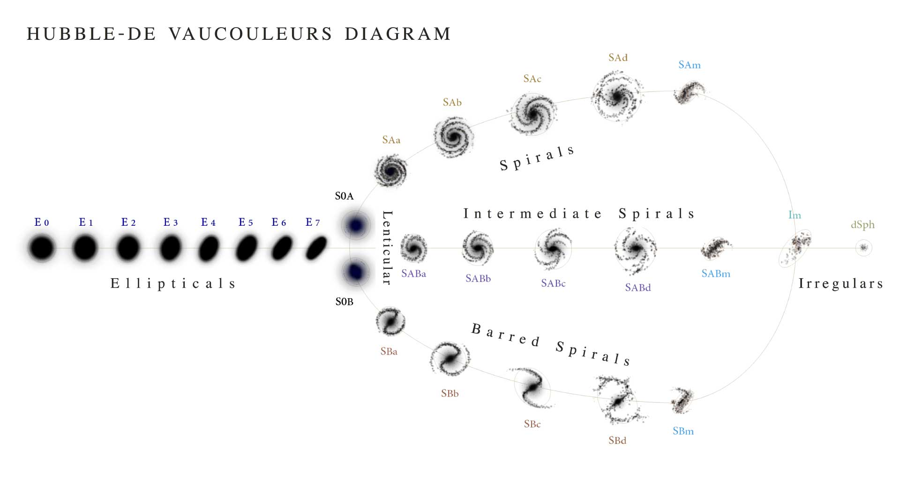</p> -v- ## de Vacouleurs revision (1959) - <span class="fragment">Addition of "A" to "normal" spirals (SA), as well as "intermediate" (SAB) between normal & barred.</span> - <span class="fragment">Subscript letters "r" and "s" after class denotes "ring" or "spiral"</span> - <span class="fragment">Superscript "+" or "-" denotes early-ness or late-ness for E (elliptical) and S0 (lenticular) types.</span> - <span class="fragment">Addition of "m" sub-class to denote magellanic-like small/irrelegular (e.g. SAm or Im)</span> - <span class="fragment">e.g. SB(r)ab = barred spiral with inner ring and tightly wound arms</span> -v- ## T-types - <span class="fragment">Numerical galaxy classes from early to late:</span> - <span class="fragment">Early types *from -5 (E0) to 0 (S0a)* (via E$^{+}$, S0$^{-}$, S0, S0$^{+}$)</span> - <span class="fragment">Ellipticals -6 to -4, Lenticulars -3 to -1.</span> - <span class="fragment">Late type *from 0 (S0a) to +10 (Im)* (via Sa, Sab, Sb, Sbc, Sc, Scd, Sd, Sdm, Sm)</span> - <span class="fragment">We will see more parametric ways of classifying galaxies later...</span> <!-- -v- ### Classification via **star formation** - Late type galaxies (LTGs) are more frequently called **star forming galaxies** (SFGs) - In opposition, ETGs may be known as **quiescent** or **passive** - <span class="fragment">Specific Star Formation Rate ($\text{sSFR} = \text{SFR}/M_*$): Quantitative boundary between star-forming and quiescent systems. --></span> --- <!--# Galaxy classification - quantitative--> <h2 id="part-4" class="slide-part-title">Part 4: Galaxy classification - quantitative</h2> ### Surface Brightness Profiles <p>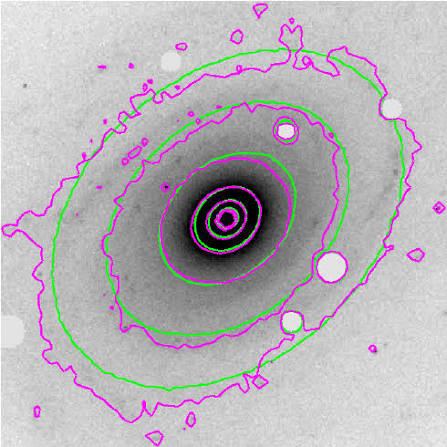</p> - <span class="fragment">How does the brightness (typically in ${\rm mag}.{\rm arcsec}^{-2}$) vary with distance from the center, $\mu_\lambda(R)$?</span> - <span class="fragment">Ellipses connecting points of equal surface brightness - **Isophate**</span> -v- ### Surface Brightness Profiles - <span class="fragment">Isophotes are fit with concentric ellipses defined by center $(x_c, y_c)$, position angle ($\text{PA}$), and ellipticity ($\epsilon = 1 - b/a$).</span> - <span class="fragment">Isophotal Deviations (e.g. using 4th fourier coefficient $a_4$):</span> - <span class="fragment">Boxy Isophotes: $a_4/a < 0$ (common in radio-loud, merger-remnant ellipticals).</span> - <span class="fragment">Disky Isophotes: $a_4/a > 0$ (uncovered embedded stellar disks).</span> -v- ## Scale Radii & Half-Light Radius ($R_e$) <p>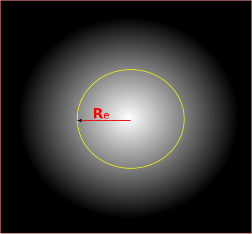</p> - <span class="fragment">Surface Brightness Conversion:</span> - <span class="fragment">$\mu(R) = m_{\text{zero}} + 2.5 \log_{10} \left(\frac{\text{Area}}{\text{Flux}(R)} \right)$</span> - <span class="fragment">$m_{\text{zero}}$: Photometric Zero-Point (calibration constant representing magnitude of an object producing $1\text{ count/second}$)</span> - <span class="fragment">The **effective**, or **half-light radius** ($R_e$ or $R_{50}$): Radius enclosing $50%$ of the galaxy's total integrated light.</span> - <span class="fragment">Disk Scale Length ($h_R$): The exponential e-folding radius of a galaxy disk profile.</span> - <span class="fragment">($R_e$) is defined by the isophate containing 50% of the total flux</span> -v- ### Surface Brightness Profiles - Sérsic Profile - We want a single value to compare two galaxies $\mu_\lambda(R)$ curves. - <span class="fragment">$\mu_\lambda(R) = \mu_\lambda(Re) \exp{(-b(n)[\left(\frac{R}{R_e}\right)^{1/n}-1])}$.</span> - <span class="fragment">Here, -b(n) is simply a normalisation term such that the sum of the flux inside and outside $R_e$ is equal ($b(n) = 2n - 1/3 + 4/(405n)$).</span> - <span class="fragment">The **Sérsic Index ($n$)**: Quantifies central concentration.</span> - <span class="fragment">$n = 4$: de Vaucouleurs profile (classical ellipticals/bulges).</span> - <span class="fragment">$n = 1$: Exponential profile (pure disk systems).</span> - <span class="fragment">$n=0.5$ is Gaussian $\exp{-R^2}$</span> - <span class="fragment">The Sérsic profile of a galaxy may change with wavelength</span> -v- ### Surface Brightness Profiles - Sérsic Fitting <p>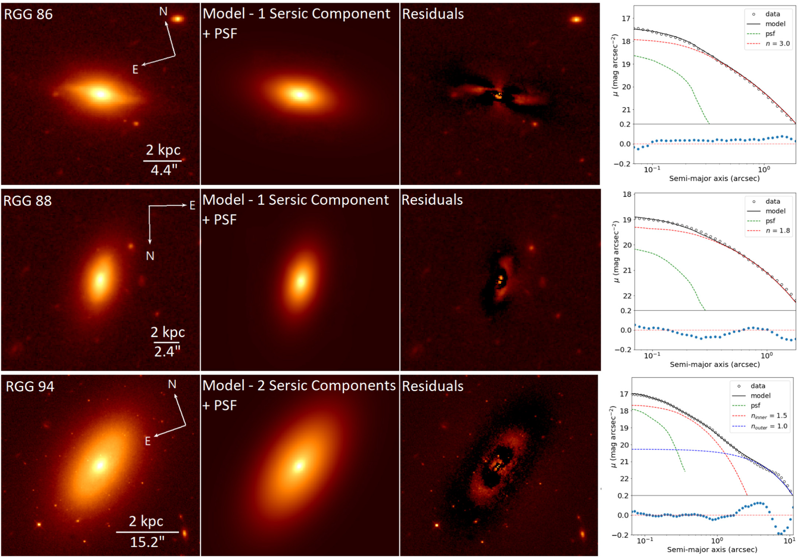</p> -v- ### Surface Brightness Profiles - Sérsic Fitting - <span class="fragment">Ellipticals show steep Sersic profiles ($2.5<n<10$)</span> - <span class="fragment">For spirals, generally $n\sim1$ (i.e. "shallow" Sérsic profiles)</span> - <span class="fragment">An n=1 Sersic profile = linear decrease in surface brightness (in magnitudes) as a function of radius (normalised to the disc scalelength, $R_d$): $\mu(R) = \mu_0 + 1.0857\frac{R}{R_d}$</span> - <span class="fragment">Central surface brightness then probes total galactic brightness</span> - <span class="fragment">Galactic inclination, and any galactic bulge (Sersic profile n>1) must be corrected/removed.</span> -v- ### Bulge-to-Disc ratio - Spirals may have two components - a steep central bulge and a flatter disc - which compete in a single Sérsic profile. - Typically classical bulges may have $n\sim4$ while pseudobulges have $n~1-2$ - **Bulge-to-disc** (B/D) or **bulge-to-total** (B/T) measurements can also be derived from a galaxy's surface brightness profile - Quantitatively, B/T varies with spiral class: | | S0/a | Sb | Scd | | :--- | :---: | :---: | ---: | | B/T | 0.2-0.3 | 0.1-0.2 | <0.1 | -v- ### Color-Magnitude - Galaxy colours and intrinsic luminosity fundamentally divide spirals and ellipticals - Ellipticals and lenticulars: redder, and typically larger/brighter - Spirals: Bluer (as active.star forming; $u-r < 1.8$), lower mass/luminosity. - <span class="fragment">Intermediate transitional population undergoing star formation "quenching" (Green Valley).</span> -v- ### Color-Magnitude <p>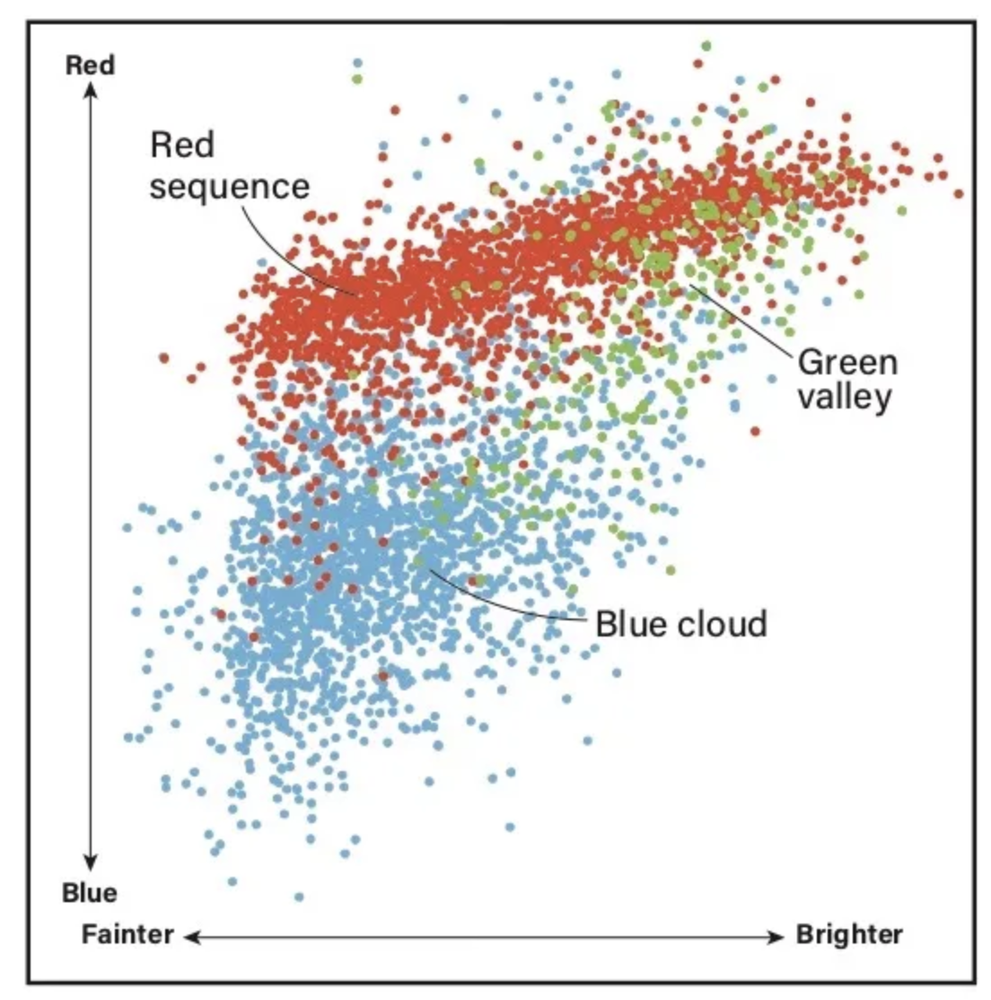</p> -v- ### "CAS" parameters / structures - <span class="fragment">**Concentration ($C$)**: Ratio of flux within 80% radius to 20% radius:</span> - <span class="fragment">$C = 5 \log_{10} \left( \frac{r_{80}}{r_{20}} \right)$</span> - <span class="fragment">**Asymmetry ($A$)**: Normalized residual flux after rotating galaxy image by $180^\circ$:</span> - <span class="fragment">$A = \frac{\sum \vert{}I_0 - I_{180}\vert{}}{2 \sum \vert{}I_0\vert{}}$</span> - <span class="fragment">**Smoothness ($S$)**: Measure of high-spatial-frequency clumpiness (star-forming knots):</span> - <span class="fragment">$S = \frac{\sum \vert{}I_0 - I_s\vert{}}{\sum \vert{}I_0\vert{}}$</span> -v- ### "CAS" parameters / structures <p>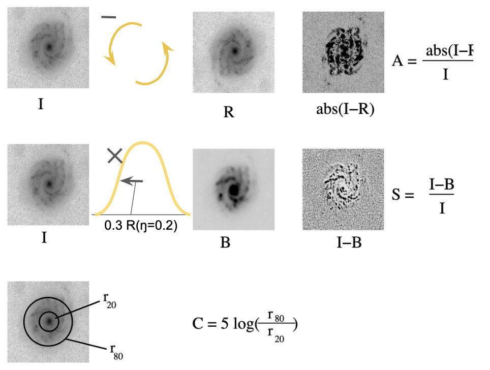</p> -v- ### Non-parametric metrics - <span class="fragment">Directly using **pixel values** (rather than e.g. fitting ellipses)</span> - <span class="fragment">Traces spatial off-center brightness concentrations (multiple nuclei, bar endpoints, tidal knots).</span> - <span class="fragment">$G$, **Gini coefficient** of pixels (bulge/core distribution):</span> - <span class="fragment">$G \approx 1$: Flux is concentrated in very few bright pixels (nucleated/AGN/steep ellipticals).</span> - <span class="fragment">$G \approx 0$: Flux is evenly distributed across all pixels (low surface brightness disk).</span> - <span class="fragment">$M_{20}$ - second order of "moment of light" calculated from brightest 20% of flux (probes irregularity of core)</span> <span class="fragment">([Lotz et al](https://iopscience.iop.org/article/10.1086/421849/pdf))</span> -v- ### The $G - M_{20}$ Morphological Plane <p>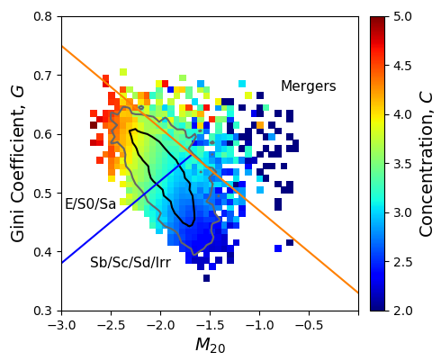</p> - <span class="fragment">Separates normal hubble types from dynamically disrupted systems without assuming structural symmetry.</span> - <span class="fragment">Classification Domains:</span> - <span class="fragment">Ellipticals: High $G$, Low $M_{20}$.</span> - <span class="fragment">Spirals / Disks: Intermediate $G$, Moderate $M_{20}$.</span> - <span class="fragment">Mergers / Interactions: High $G$, High $M_{20}$ (distinct line separator: $G > -0.14 M_{20} + 0.33$).</span> --- <h2 id="part-5" class="slide-part-title">Part 5: Spiral Galaxy Rotation</h2> <p>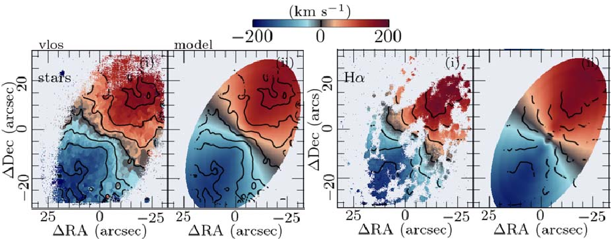</p> - <span class="fragment">Optical spectroscopy of H$\alpha$ and other emission lines coming from **stars**</span> - <span class="fragment">Radio observations of the hydrogen "21cm" line coming from **neutal H gas**</span> - <span class="fragment">Both allows measurements of the doppler shift of the approaching & receeding halves as a function of galactic distance</span> -v- ### Spiral galaxy rotation - <span class="fragment">$$V_c(R) = \sqrt{\frac{G M(<R)}{R}}$$ - velocity set by enclose mass</span> - <span class="fragment">Expectation from star/gas mass: $$V_c(R) \propto R^{-1/2}$$, i.e. velocities drop with distance.</span> - <span class="fragment">Reality: rotation curves are **flat** throughout the visible disc</span> -v- ### Spiral galaxy rotation <p>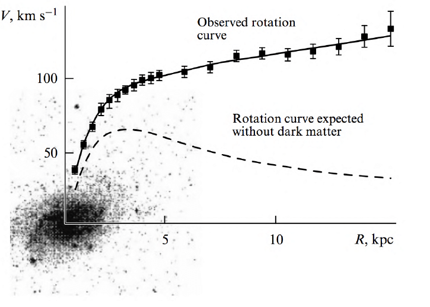</p> -v- ### Spiral galaxy rotation - Q: What does this imply about mass? - <span class="fragment">Far higher than expected - **dark matter halo**</span> --- <!--# Stars, stellar populations & star formation--> <h2 id="part-6" class="slide-part-title">Part 6: Stars, stellar populations & star formation</h2> - <span class="fragment">The mass of stars determines both their **luminosity**, which also directly determine's their lifetime:</span> - <span class="fragment">$\frac{L_s}{L_\odot} \approx \frac{M_s}{M_\odot}^\alpha$.</span> - <span class="fragment">$\alpha=4$ for GK stars \& $\alpha=3.5$ for large main sequence stars (OBAF stars).</span> - <span class="fragment">As luminosity probes the rate of nuclear fusion, it is inversely proportional to stellar main sequence lifetime, $\tau_{MS} = 10^{10}{\rm yrs}.\frac{M_s}{M_\odot}\frac{L_\odot}{L_s}$</span> - <span class="fragment">Stars also get hotter with mass, increase by around $\frac{L_s}{L_\odot} \approx \frac{M_s}{M_\odot}^0.525$.</span> -v- ## Stellar Populations in Spiral Galaxies <p>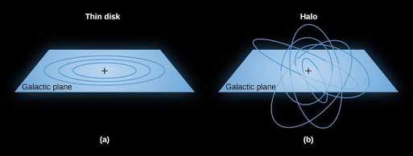</p> - <span class="fragment">**Walter Baade’s Dichotomy (1944):** Stars in spiral galaxies divide into chemical, kinematic, & spatial populations:</span> -v- ## Stellar Populations in Spiral Galaxies #### Population I (Young & Metal-Rich): * <span class="fragment">Solar to super-solar metallicity($[\text{Fe/H}] \sim -0.5 \text{ to } +0.3$)</span> * <span class="fragment">Young: $< 8\text{ Gyr}$.</span> * <span class="fragment">Concentrated in the **thin disk** ($\text{scale height } z_d \sim 300\text{ pc}$) & spiral arms.</span> * <span class="fragment">Planar rotation & low velocity dispersion ($V_\phi \gg \sigma_z$).</span> -v- ## Stellar Populations in Spiral Galaxies #### Population II (Old & Metal-Poor): * <span class="fragment">Low metallicity ($[\text{Fe/H}] \lesssim -1.0$)</span> * <span class="fragment">Old $> 10\text{--}12\text{ Gyr}$.</span> * <span class="fragment">Found in the **stellar halo**, globular clusters, and classical bulge.</span> * <span class="fragment">Pressure-supported, highly eccentric orbits & large vertical dispersion ($\sigma_z \approx \sigma_R$).</span> -v- ## Stellar Populations in Spiral Galaxies #### Population III (Primordial): * <span class="fragment">Pure primordial gas ($Z = 0$, $H$ and $He$ only) formed very early $z \gtrsim 10\text{--}20$.</span> * <span class="fragment">Required massive stars ($10\text{--}100+ M_\odot$) that died rapidly via Pair-Instability or Core-Collapse SNe.</span> * <span class="fragment">Extinct today - seeded Pop II stars with initial metals ($[\text{Fe/H}] \sim -4\text{ to } -3$).</span> -v- ## Stellar Populations in Spiral Galaxies - The Milky Way bar & bulge are yellow-white due to Pop II stars - <span class="fragment">Color gradients in nearby spirals (e.g., M31, M101) also trace this population structure: blue star-forming Pop I arms and a red Pop II spheroid halo.</span> -v- ### Star formation impact on galaxies - Galaxies with active star formation must be **bluer** than galaxies which only have old stars. - Spirals also have **spectroscopic** signatures of young stellar populations: - Young, hot stars show emission lines - GKM stars show a strong "break" at 4000\o{A} (**D4000 break**) -v- ### Star formation impact on galaxies <p>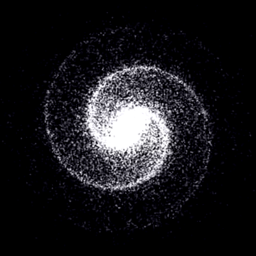</p> - Blue star-forming regions of spiral galaxies are in the **spiral arms** - This is because spiral arms are stable regions of **high density**, concentrating stars but also gas & dust -v- ### Starburst galaxies - Defined as galaxies undergoing **extreme star formation** - <span class="fragment">Identified via colours, as well as strong emission lines in spectra</span> - <span class="fragment">These are from 25000-50000K "Wolf-Rayet" stars larger than $20M_{\odot}$ which live only a few Myr</span> - <span class="fragment">The *Gas Depletion Timescale* of such galaxies is also short $$\tau_{\text{dep}} = \frac{M_{\text{gas}}}{\text{SFR}} < 10^8 \text{ yr}$$</span> - <span class="fragment">Drivers: Major/minor mergers, strong bar shocks, or extreme gas accretion events</span> - <span class="fragment">Feedback mechanisms (e.g. supernovae & gas outflows during starbursts) supress star formation</span> --- <h2 id="part-7" class="slide-part-title">Part 7: Rare & Diffuse galaxies</h2> ### Low surface-brightness galaxies - Some galaxies show very low surface brightness ($\mu_0(B)>23$ mag arcsec$^-2$) - Velocities show they are unusually dark matter-dominated at all radii. - Low star formation efficiency & low surface density of gas. - Examples: Malin 1 (giant LSB galaxy with a giant low-density disk extending to $R > 100\text{ kpc}$). -v- ### Ultra-Diffuse Galaxies (UDGs) - Extreme Structural Parameters: - <span class="fragment">Milky Way-sized effective radii ($R_e > 1.5\text{ kpc}$) but dwarf-like stellar masses ($M_* \sim 10^7\text{--}10^8 M_\odot$).</span> - <span class="fragment">Central Surface Brightness: $\mu_0(g) > 24\text{ mag/arcsec}^2$ (lower than LSBs).</span> - <span class="fragment">Formation Scenarios:</span> - <span class="fragment">High-spin dwarf halos that expanded during formation.</span> - <span class="fragment">Failed $L^*$ galaxies stripped of their gas early in cluster environments.</span> --- <!--# Galaxies in surveys--> <h2 id="part-8" class="slide-part-title">Part 8: Galaxies in surveys</h2> #### Imaging surveys - <span class="fragment">**Hubble Space Telescope (HST)**:</span> - <span class="fragment">High-resolution deep fields (HDF, HUDF, CANDELS) established high-redshift galaxy morphology out to $z > 3$.</span> - <span class="fragment">**Sloan Digital Sky Survey (SDSS)**:</span> - <span class="fragment">Wavelength coverage across $u,g,r,i,z$ over 35% of the sky. Mapped local universe galaxy demographics ($N > 10^6$ spectra).</span> - <span class="fragment">First mapped the "blue cloud" and "red sequence"</span> - <span class="fragment">**Dark Energy Camera (DECam / DES)**:</span> - <span class="fragment">Wide-field precursor imaging mapping low surface brightness tidal features and stellar halos.</span> -v- #### Spectroscopic surveys - **Single-Fiber Spectroscopy** (SDSS-I/II, 2dFGRS): - <span class="fragment">Single fiber targeted at galaxy core</span> - <span class="fragment">Global redshift $z$, central stellar velocity dispersion $\sigma$, & nuclear line ratios... but misses outer disk properties.</span> - <span class="fragment">**Multi-Object Spectroscopy** (MOS: DEEP2, VVDS, DESI, PFS):</span> - <span class="fragment">Robots align thousands of fibers simultaneously across a wide FoV.</span> - <span class="fragment">Maps 3D cosmic web structure, and galaxy clustering out to $z > 3$.</span> - <span class="fragment">**Integral Field Unit (IFU)** Spectroscopy (MaNGA, CALIFA, SAMI):</span> - <span class="fragment">Fibre bundles or pixel prisms (Integral Field Units) - spatially resolved 2D maps (spaxels) of velocity, age, & metallicity.</span> -v- ### Next-Generation Astronomical Surveys <img src="https://upload.wikimedia.org/wikipedia/commons/e/e8/Euclid_Spacecraft_illustration.png" class="r-stretch" /> - <span class="fragment">**Euclid Space Mission (ESA)**:</span> - <span class="fragment">Wide-field diffraction-limited optical + NIR space imaging ($15,000\text{ deg}^2$).</span> - <span class="fragment">Tracing morphological transformation and weak lensing shear for billions of distant galaxies.</span> - <span class="fragment">**Vera C. Rubin Observatory (LSST)**:</span> - <span class="fragment">$8.4\text{m}$ ground-based wide-field synoptic survey ($18,000\text{ deg}^2$).</span> - <span class="fragment">Reaches surface brightness limits $\mu_r \sim 32\text{ mag/arcsec}^2$, revealing ultra-faint dwarfs and streams.</span> - <span class="fragment">**Nancy Grace Roman Space Telescope (NASA)**: Infrared survey space telescope with $100\times$ HST's field of view.</span> --- <!--# Large-Scale Morphology--> <h2 id="part-9" class="slide-part-title">Part 9: Large-Scale Morphology</h2> - <span class="fragment">**Automated 2D Profile Fitting**:</span> - <span class="fragment">GALFIT / GALFITM: $\chi^2$-minimization for multi-component Sérsic models.</span> - <span class="fragment">statmorph / PyAutoGalaxy: Automated non-parametric parameter extraction ($CAS$, $G$, $M_{20}$).</span> - <span class="fragment">**Crowd-Sourced Science (Galaxy Zoo)**:</span> - <span class="fragment">$> 10^6$ visual classifications provided by citizen scientists for SDSS and HST surveys.</span> - <span class="fragment">Discovered rare systems (e.g., Green Pea galaxies, Voorwerpjes).</span> -v- ## Deep Learning & Convolutional Neural Networks <img src="https://upload.wikimedia.org/wikipedia/commons/6/63/Typical_cnn.png" class="r-stretch" /> - <span class="fragment">The Machine Learning Shift: Scaling profile fitting to $> 10^9$ galaxies from Rubin/Euclid requires neural networks.</span> - <span class="fragment">**Convolutional Neural Networks**:</span> - <span class="fragment">Input: Raw multi-band pixel cutouts ($u,g,r,i,z$).</span> - <span class="fragment">Output: Probabilities for morphological features (bars, arm spiral tightness, mergers).</span> - <span class="fragment">**Unsupervised Machine Learning**:</span> - Autoencoders & self-supervised algorithms - <span class="fragment">Group galaxy images without pre-existing human taxonomies.</span> --- <!--# Key Scientific Discoveries from Modern Surveys--> <!-- <img src="https://upload.wikimedia.org/wikipedia/commons/b/b5/Morphology_density_relation.png" class="r-stretch" /> - <span class="fragment">**Morphology-Density Relation**: Disk galaxies dominate low-density field environments, whereas dense cluster cores are dominated by S0 and Elliptical galaxies (Dressler 1980).</span> - <span class="fragment">**Secular Structural Growth**: Bars and spiral density waves account for up to 30% of central bulge mass assembly since $z \sim 1$.</span> - <span class="fragment">JWST has revealed well-formed, rotationally supported spirals occurring much earlier ($z > 3$) than predicted</span> - <span class="fragment">Speed drops in outer regions of young spirals - suggests young galaxy interiors more heavily dominated by gas \& stars not dark matter--></span> <span class="fragment"><!-- Downsizing: Massive ellipticals completed their star formation early ($z > 2$), while late-type spirals continue star formation to the present epoch. --></span> <h2 id="part-10" class="slide-part-title">Part 10: Additional resources</h2> Online: - [Galaxy Zoo](https://www.zooniverse.org/projects/zookeeper/galaxy-zoo) - [Dr Becky on Youtube](https://www.youtube.com/watch?v=qK0eCgob81k) Literature/Books: - [An introduction to Galaxies and Cosmology](https://dn720002.ca.archive.org/0/items/GalaxiesCosmologyS282JonesLambourne2003/S282%20An%20Introduction%20to%20Galaxies%20and%20Cosmology.pdf) - [Hidden lives of Galaxies](https://imagine.gsfc.nasa.gov/educators/galaxies/imagine/imagine_book.pdf) - [Galaxies through Space and Time (HST focus)](https://www.nasa.gov/wp-content/uploads/2019/08/hubblefocusgalaxies.pdf)